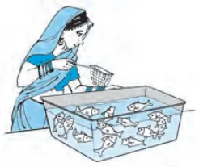
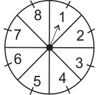
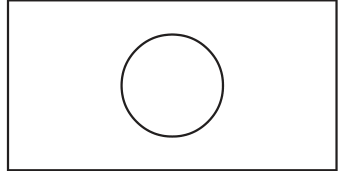
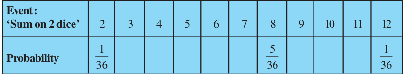

- (i)Probability of an event \(E +\) Probability of the event ‘not E’ = .
- (ii)The probability of an event that cannot happen is . Such an event is
called .
- (iii)The probability of an event that is certain to happen is . Such an event
is called .
- (iv)The sum of the probabilities of all the elementary events of an experiment is
- (v)The probability of an event is greater than or equal to and less than or
equal to .
- 2.Which of the following experiments have equally likely outcomes? Explain.
- (i)A driver attempts to start a car. The car starts or does not start.
- (ii)A player attempts to shoot a basketball. She/he shoots or misses the shot.
- (iii)A trial is made to answer a true-false question. The answer is right or wrong.
- (iv)A baby is born. It is a boy or a girl.
- 3.Why is tossing a coin considered to be a fair way of deciding which team should get the
ball at the beginning of a football game?
- 4.Which of the following cannot be the probability of an event?
- (A)\(\frac{2}{3}\) (B) \(- 1.5\) (C) 15% (D) 0.7
- 5.If P(E) \(= 0.05\), what is the probability of ‘not E’?
- 6.A bag contains lemon flavoured candies only. Malini takes out one candy without
looking into the bag. What is the probability that she takes out
- (i)an orange flavoured candy?
- (ii)a lemon flavoured candy?
- 7.It is given that in a group of 3 students, the probability of 2 students not having the
same birthday is 0.992. What is the probability that the 2 students have the same birthday?
- 8.A bag contains 3 red balls and 5 black balls. A ball is drawn at random from the bag.
What is the probability that the ball drawn is (i) red ? (ii) not red?
- 9.A box contains 5 red marbles, 8 white marbles and 4 green marbles. One marble is taken
out of the box at random. What is the probability that the marble taken out will be
- (i)red ? (ii) white ? (iii) not green?
- 10.A piggy bank contains hundred 50p coins, fifty ` 1 coins, twenty ` 2 coins and ten ` 5
coins. If it is equally likely that one of the coins will fall out when the bank is turned upside down, what is the probability that the coin (i) will be a 50 p coin ? (ii) will not be a ` 5 coin?

- 11.Gopi buys a fish from a shop for his aquarium. The
shopkeeper takes out one fish at random from a tank containing 5 male fish and 8 female fish (see Fig. 14.4). What is the probability that the fish taken out is a male fish?
- 12.A game of chance consists of spinning an arrow
which comes to rest pointing at one of the numbers Fig. 14.4 1, 2, 3, 4, 5, 6, 7, 8 (see Fig. 14.5 ), and these are equally likely outcomes. What is the probability that it will point at

- (i)8 ?
- (ii)an odd number?
- (iii)a number greater than 2?
- (iv)a number less than 9?
Fig. 14.5
- 13.A die is thrown once. Find the probability of getting
- (i)a prime number; (ii) a number lying between 2 and 6; (iii) an odd number.
- 14.One card is drawn from a well-shuffled deck of 52 cards. Find the probability of getting
- (i)a king of red colour (ii) a face card (iii) a red face card
- (iv)the jack of hearts (v) a spade (vi) the queen of diamonds
- 15.Five cards - the ten, jack, queen, king and ace of diamonds, are well-shuffled with their
face downwards. One card is then picked up at random.
- (i)What is the probability that the card is the queen?
- (ii)If the queen is drawn and put aside, what is the probability that the second card
picked up is (a) an ace? (b) a queen?
- 16.12 defective pens are accidentally mixed with 132 good ones. It is not possible to just
look at a pen and tell whether or not it is defective. One pen is taken out at random from this lot. Determine the probability that the pen taken out is a good one.
- 17.(i) A lot of 20 bulbs contain 4 defective ones. One bulb is drawn at random from the lot.
What is the probability that this bulb is defective?
- (ii)Suppose the bulb drawn in (i) is not defective and is not replaced. Now one bulb
is drawn at random from the rest. What is the probability that this bulb is not defective ?
- 18.A box contains 90 discs which are numbered from 1 to 90. If one disc is drawn at random
from the box, find the probability that it bears (i) a two-digit number (ii) a perfect square number (iii) a number divisible by 5.
- 19.A child has a die whose six faces show the letters as given below:
The die is thrown once. What is the probability of getting (i) A? (ii) D? 20*. Suppose you drop a die at random on the rectangular region shown in Fig. 14.6. What is the probability that it will land inside the circle with diameter 1m?

Fig. 14.6
- 21.A lot consists of 144 ball pens of which 20 are defective and the others are good. Nuri
will buy a pen if it is good, but will not buy if it is defective. The shopkeeper draws one pen at random and gives it to her. What is the probability that
- (i)She will buy it ?
- (ii)She will not buy it ?
- 22.Refer to Example 13. (i) Complete the following table:

- (ii)A student argues that ‘there are 11 possible outcomes 2, 3, 4, 5, 6, 7, 8, 9, 10, 11 and
- 12.Therefore, each of them has a probability \(\frac{1}{11}\) . Do you agree with this argument?
Justify your answer.
- 23.A game consists of tossing a one rupee coin 3 times and noting its outcome each time.
Hanif wins if all the tosses give the same result i.e., three heads or three tails, and loses otherwise. Calculate the probability that Hanif will lose the game.
- 24.A die is thrown twice. What is the probability that
- (i)5 will not come up either time? (ii) 5 will come up at least once?
[Hint : Throwing a die twice and throwing two dice simultaneously are treated as the same experiment]
- *Not from the examination point of view.
- 25.Which of the following arguments are correct and which are not correct? Give reasons
for your answer.
- (i)If two coins are tossed simultaneously there are three possible outcomes - two
heads, two tails or one of each. Therefore, for each of these outcomes, the
probability is \(\frac{1}{3} \cdot\)
- (ii)If a die is thrown, there are two possible outcomes - an odd number or an even